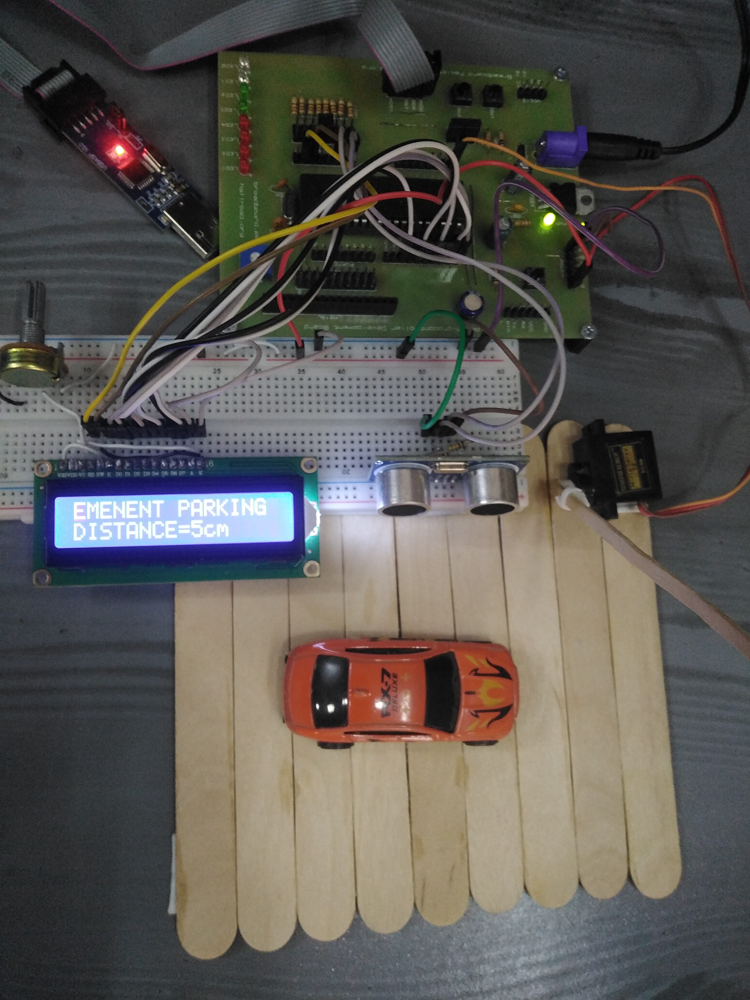

An ATmega32A-based system that measures distance with an HC-SR04 ultrasonic sensor and automatically actuates a servo-driven barrier.

This system measures the distance to nearby objects using an ultrasonic sensor (HC-SR04) and controls a barrier mechanism via a servo motor. An ATmega32A microcontroller processes the sensor data and displays the distance on a 16×2 LCD. When an object is detected within 10 cm, the barrier is raised, simulating automated gate control. Designed for parking assistance and access control, the system demonstrates real-time sensing, processing, and actuation.
The ATmega32A sends a trigger pulse to the HC-SR04, which emits an ultrasonic wave. The echo pulse width is measured using an external interrupt and Timer1, converted to distance, and displayed on the LCD. If the distance is ≤ 10 cm, the servo raises the barrier; otherwise, it lowers it.
The echo pulse width is captured on the external interrupt, and the barrier is actuated based on the measured distance:
ISR(INT0_vect) {
if (i == 1) {
TCCR1B = 0;
pulse = TCNT1;
TCNT1 = 0;
i = 0;
} else {
TCCR1B |= (1 << CS10);
i = 1;
}
}
if (COUNTA <= 10) {
barrier_up();
} else {
barrier_down();
}
The system was tested with various distances. Measurements displayed accurately on the LCD. When an object was ≤ 10 cm, the barrier activated promptly, with response time suitable for real-time use.
The project achieved its objectives, demonstrating reliable distance measurement and automated barrier control. It can be applied to parking systems, security gates, and other automated access systems. Potential improvements include adding more sensors and integrating wireless monitoring.